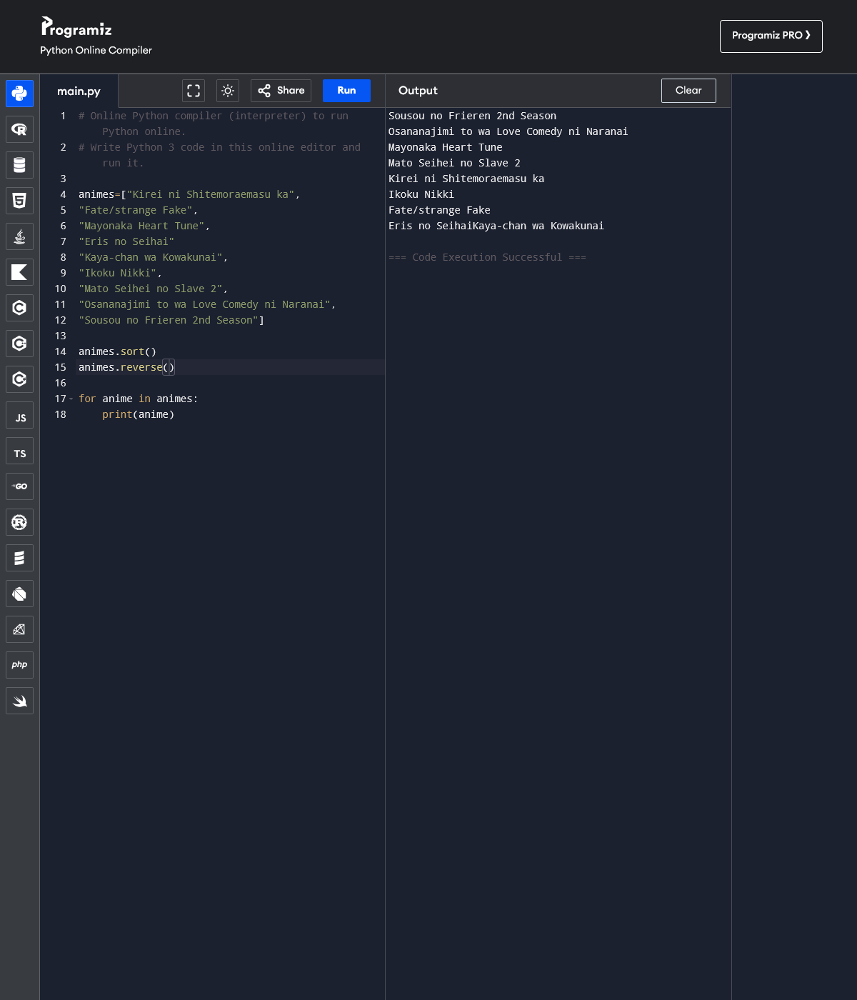

amigojapan: hey jedesa !
jedesa: ya!
amgigojapan: yaa!
jedesa: So, what are we learning today?
amgigojapan: jedesa: so I thought today I would teach you the 8 basics of programming, but i already made a course for that, let me show you
amgigojapan: jedesa: this page is one i wrote
https://amigojapan.github.io/8_basics_of_programming/8_basics_of_programming_python3_new.html
— jedesa reading ..
amgigojapan: jedesa: yeah ask me any questions you have please
jedesa: ok, 10 minutes
amgigojapan: jedesa: take your time, read it slow, and ask any question you want
jedesa: ok I have go through it
jedesa: and look around in the official python docs a little
amgigojapan: good good jedesa , any questions?
jedesa: hmm let's see
— jedesa thinking ..
amgigojapan: ok
jedesa: for the introduction to programming itself, I feel it's sufficient
amgigojapan: ah ok jedesa
amgigojapan: jedesa: now I guess just to fill in the extra time, lets think of an exercise i can have you do with the new knowledge
jedesa: but I have problem
amgigojapan: jedesa: first can you make a loop that prints "Hello this is jedesa" forever?
amgigojapan: what is the problem?
jedesa: while True: print("Hello this is jedesa")
amgigojapan: oh great!
jedesa: hmm, it relates more to time and experience I have with python
jedesa: I have looked a little into Python in the past, but I didn't know back then the docs are pretty good and comprehensive
amgigojapan: jedesa: well, I think you need both my instructions AND the docs
jedesa: Okay
amgigojapan: jedesa: ok, now make me a list of your favorite anime , then order it in reverse alphabetic order and print it out
jedesa: ok hold on
amgigojapan: ok
amgigojapan: take your time
jedesa: I made use builtins of the python

amgigojapan: let me see jedesa
amgigojapan: very good jedesa , now can you make the guess my number game? you may need to look up howe to make random numbers, or I could teach you that
amgigojapan: jedesa: do you know the guess my number game?
jedesa: I'm not sure about this game
amgigojapan: ok jedesa , I will pretend to be the computer now, and you be the user ok?
jedesa: for example given a number of 1..10 if both human and computer guess correctly it stops?
amgigojapan: jedesa: well, not exactly
amgigojapan: jedesa: lets role play it first, then you will understand
jedesa: Okay
amgigojapan: ok, I am the computer
jedesa: Yeah
amgigojapan: I am choosing a number from 1 to 100, randomly....
amgigojapan: jedesa: ok, I got it
amgigojapan: jedesa: now guess what number I chose...
jedesa: hmm 55
amgigojapan: jedesa: thats too low
amgigojapan: guess again
jedesa: 75
amgigojapan: thats too high, please guess again
jedesa: 67
amgigojapan: thats too low, please guess again
jedesa: 70
amgigojapan: thats too low, please guess again
jedesa: 73
amgigojapan: thats too hight please guess again
jedesa: 72
amgigojapan: thats too high, please guess again
jedesa: 71
amgigojapan: you got it!
jedesa: hmm yep
amgigojapan: now you understand?
jedesa: I think I got it
amgigojapan: ok, please make that program, and put the code in pastebin, and send it to me
#run on https://www.programiz.com/online-compiler/9vpWUf2vsaTxm
import random
number=random.randrange(1,11)
correct=True
guess=random.randrange(1,11) # simulate random input
print("Please guess a number from 1 to 10")
while correct:
guess=random.randrange(1,11)
print("Input number: ", guess)
if guess > number:
print("Too high, try again!")
elif guess < number:
print("Too low, try again!")
else:
print("That's correct!")
correct=False
amgigojapan: oh let me see
jedesa: it doesn't seem to accept input amigojapan
jedesa: So I had to put a work around
amgigojapan: ok let me take a look jedesa , give me a couple of minutes
jedesa: oh .. I thought the browser environment is not interactive
jedesa: this one has input, and up to 100
#run from https://www.programiz.com/online-compiler/9vpWUf2vsaTxm
import random
number=random.randrange(1,11)
correct=True
guess=random.randrange(1,11) # simulate random input
print("Please guess a number from 1 to 10")
while correct:
guess=random.randrange(1,11)
print("Input number: ", guess)
if guess > number:
print("Too high, try again!")
elif guess < number:
print("Too low, try again!")
else:
print("That's correct!")
correct=False
jedesa: ^^ I have fixed it
amgigojapan: let me see
amgigojapan: no jedesa , you either misunderstood what I want, or you made a mistake on what you wanted to send me
jedesa: hmm, the latest one ?
amgigojapan: jedesa: I want the user to be a real person, getting input
amgigojapan: yes
amgigojapan: jedesa: its not the computer that should guess, but the user
amgigojapan: jedesa: thats why I said "I am roleplaying the computer, and you are the user"
jedesa: I think the user can give input and guess amigojapan
amgigojapan: jedesa: then you sent me the wrong link maybe?
jedesa: and the computer pick a random number at the beginning..?
#run form https://www.programiz.com/online-compiler/16VmIQv6eoNYe
import random
number=random.randrange(1,101)
correct=True
print("Please guess a number from 1 to 100")
while correct:
print("Input number: ")
guess=int(input())
if guess > number:
print("Too high, try again!")
elif guess < number:
print("Too low, try again!")
else:
print("That's correct!")
correct=False
— amigojapan clicks
jedesa: how about this?
amgigojapan: yes! thats great jedesa !
amgigojapan: jedesa: are you up for one last exercise or want to call it a day?
jedesa: what is last exercise?
amgigojapan: jedesa: I want you to make the memorize game, it is on my BBS actually
amgigojapan: jedesa: it is a game i invented
jedesa: Oh
amgigojapan: jedesa: it is one of the doorgames
jedesa: Hey I actually haven't checked this
jedesa: Okay
amgigojapan: ok
amgigojapan: BBS is here now by the way https://amjp.psy-k.org/JPLY/en.php
— jedesa checks bbs
amgigojapan: thanks
amgigojapan: ok
amgigojapan: jedesa: why don't you do it for homework? since time is almost up...
amgigojapan: jedesa: just try the game on the BBS
jedesa: Okay
amgigojapan: jedesa: by the way, I am clearing the screen by printing many newlines, until the answer is gone
jedesa's homework:
# runs on https://www.programiz.com/online-compiler/63e9CfqUZJCtp
import time, random
print("Memorisation Game")
print("# Memorise the number within 3 seconds!")
print("# Game over at wrong guess!")
print("")
time.sleep(3)
flag=True
counter=0
level=10
start=1
end=10
rng=random.randrange(start,end)
guess=rng
while guess == rng:
start=start*level
end=end*level
while guess == rng:
rng = random.randrange(start,end)
print(f"Remember this! ",rng, end='\r')
time.sleep(3)
print(f"What number was shown? ")
guess=int(input())
print(f"Good up to", len(str(start)) - 1, "digits")